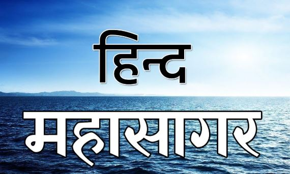

हिंदुस्तान
हिंद महासागर, जो एशिया, अफ्रीका और ऑस्ट्रेलिया के बीच स्थित है, भारत के लिए न केवल एक भौगोलिक सीमांकन है, बल्कि एक सांस्कृतिक और ऐतिहासिक धरोहर भी है। इस महासागर के तट पर स्थित भारत, अपनी विविधता और समृद्ध इतिहास के कारण एक अद्वितीय स्थान रखता है। भारत का समुद्र तट 7,500 किलोमीटर से भी अधिक लंबा है, और यह हिंद महासागर के विभिन्न देशों से जुड़ा हुआ है, जिससे यह देश एक महत्वपूर्ण व्यापारिक और रणनीतिक केंद्र बन गया है।
भारत की समुद्र तटों की भूमि का समृद्ध ऐतिहासिक महत्व है, जहां से प्राचीन सभ्यताओं के संपर्क और व्यापार के मार्ग गुजरते थे। भारत ने सदियों से हिंद महासागर के माध्यम से दुनिया के अन्य हिस्सों से सांस्कृतिक, धार्मिक और व्यापारिक संबंध बनाए रखे हैं। भारतीय महासागरीय नीति भी समय-समय पर विकसित हुई है, जो न केवल समृद्धि बल्कि क्षेत्रीय सुरक्षा और सहयोग को बढ़ावा देती है।
आज भी हिंद महासागर में भारत की उपस्थिति महत्वपूर्ण है, और यह देश वैश्विक शक्ति बनने की दिशा में लगातार अग्रसर है, जो समुद्री मार्गों के माध्यम से अपनी कूटनीति और सामरिक महत्त्व को प्रकट करता है।
 CLICK here to go Home